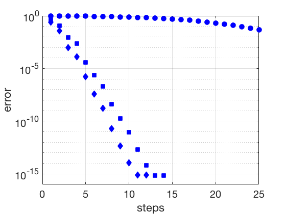

Additional Examples 2.6
1
Find the Cholesky factorization of the symmetric positive-definite matrix
\(
\left[\begin{array}{rr}
4&-2\\-2 &6
\end{array}\right] .
\)
The top row of \(R\) is \(R_{11}=\sqrt{a_{11}}=2\), followed by \( R_{12}=u=\frac{[-2]}{\sqrt{a_{11}}}=-1\).
Subtracting the outer product \(uu^T\) from the lower principal submatrix \([6]\) leaves \( 6-1=5\).
Repeating the factorization step for the remaining \(1\times 1\) matrix yields \(R_{22} = \sqrt{5}.\) Therefore
\(
R =
\left[\begin{array}{rr}
2 &-1\\
0&\sqrt{5}
\end{array}\right]
\) satisfies
\[ R^TR =
\left[\begin{array}{rr}
2 &0\\
-1&\sqrt{5}
\end{array}\right]
\left[\begin{array}{rr}
2 &-1\\
0&\sqrt{5}
\end{array}\right]
=
\left[\begin{array}{rr}
4 &-2\\
-2&6
\end{array}\right].
\]
2
Let \(n=100\), and let \(A\) be the \(n\times n\) matrix with diagonal entries \(A(i,i) = i\) and entries \(A(i,i+1) = A(i+1,i)=0.4 \) on the super-diagonal and sub-diagonal. Let \(x_c\) denote the vector of \(n\) ones, and set \(b = Ax_c\). Apply the Conjugate Gradient Method (a) with no preconditioner, (b) with the Jacobi preconditioner, and (c) with the Gauss-Seidel preconditioner. Compare errors of the three runs by plotting error versus step number.
The plot of errors versus step number for Conjugate Gradient are shown below. The circles, squares, and diamonds denote error with no preconditioner, the Jacobi preconditioner, and the Gauss-Seidel preconditioner, respectively.
